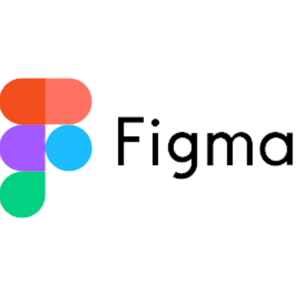
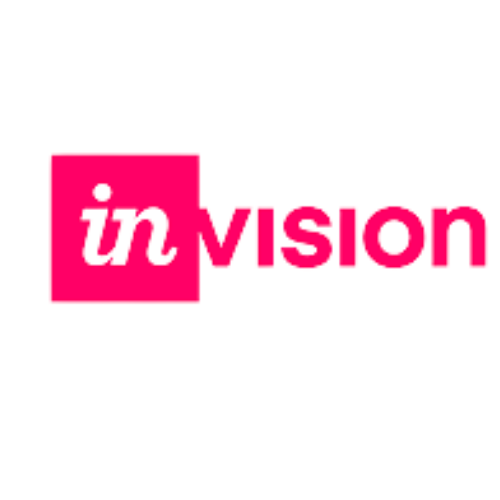
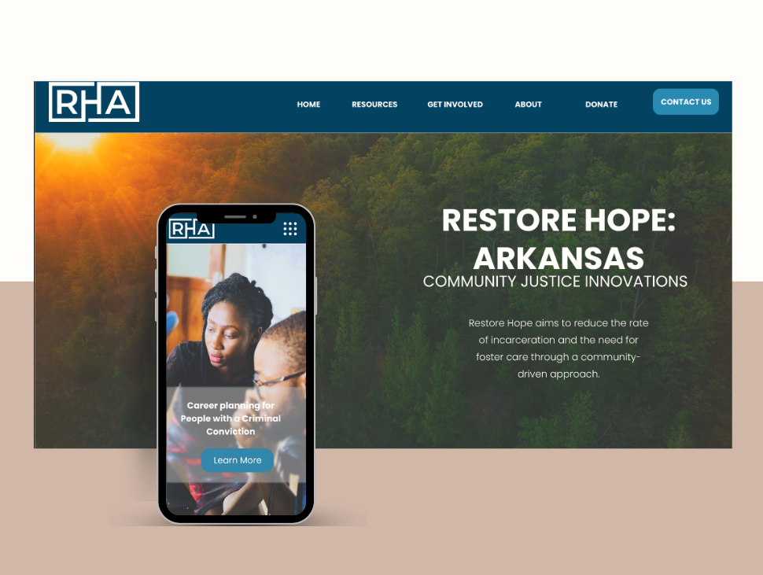
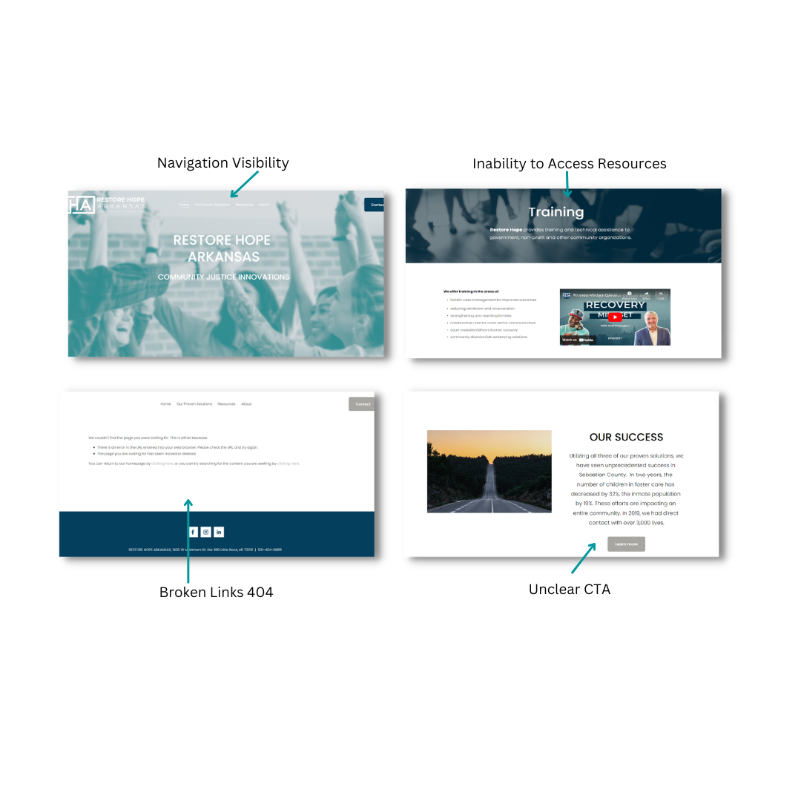
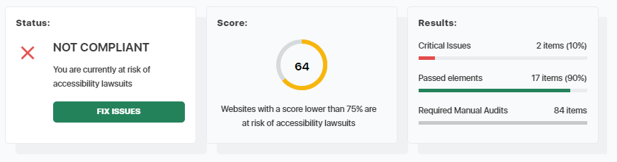
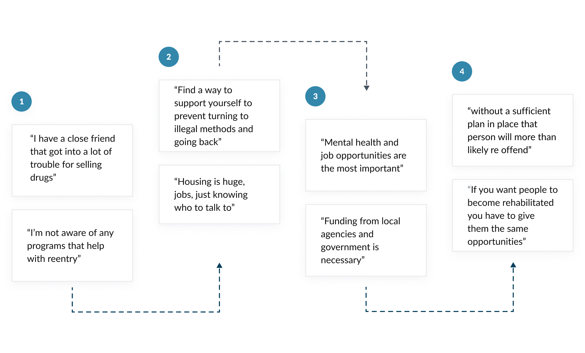
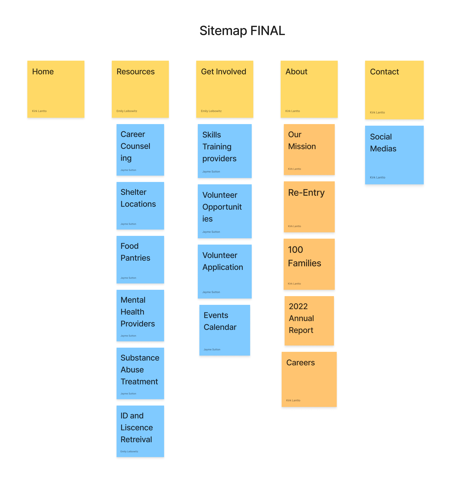
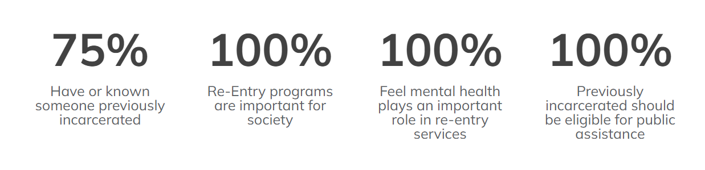
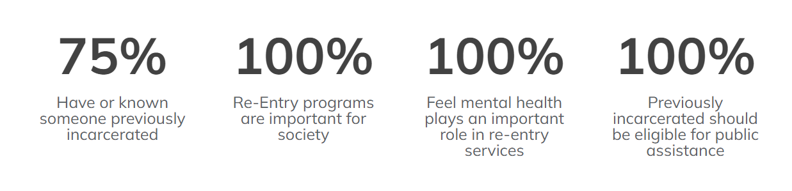

About
Restore Hope Arkansas is a non-profit organization that uses a collective impact model to bring together government and community services in order to follow their mission of reducing incarceration and the need for foster care. The organization ties together the community resources provided for the people and extends a helping hand to those in crisis.
My Role
As a team, we performed user research and competitive analysis, and created user flow, wireframes and prototype in a 3-week sprint. I worked on this as part of my George Washington University UX/UI Design Certificate.
Design Tools





Define
Problem
- Outdated design
- Update navigation
- Provide access to actual resources
- Inconsistent design elements and style
- Correct accessibility issues
- Primary goal and purpose of site is unclear
Goals
- Declutter Landing Page
- Improve the site's navigation
- Introduce a means to donate
- Redesign the interface to look more modern and consistent
- Make the new solution accessible and easy to reach from any device
- Introduce a means of requesting services

Research
Research Strategy
The first thing we focused on was our research strategy. In order to identify the flaws in the current UX and UI, we conducted a usability test by interviewing people that fit our user archetype. These were users over the age of 50 who had lost a loved one within the past 5-10 years. Before we began our interviews we first needed to do two things.
First we conduct a competitor analysis. Aside from using and understanding Memento, this also gave us an insight in the market space and provided additional context for the problem we are working on. Secondly we create an interview guide in preparation for Usability Testing. This enabled us to conduct our interviews in a consistent and controlled manner.
Competitor: Analysis
We carried out a competitive analysis to learn more about the offerings and attributes of our rivals. The initial step involved identifying 2 of our direct competitors and 2 of our indirect competitors.
Competitor: Features
Then we created a comparison matrix based on 22 criteria, including Nielsen’s heuristics. Based on this matrix, we came up with features that positioned our product above our competitors.

Accessibility Evaluation
- Contrast Ratio: Characters on this website have a low color contrast ratio, people with visual impairments or color-blindness will find it very difficult to navigate your site.
- Missing Title Attributes: Navigating through frames and inline frames can quickly become difficult and confusing for assistive technology users if the frames are not marked with title attributes.
User Interviews
We wanted to better understand the needs and frustrations of those trying to re-enter society and their families. Through a mix of 1 on 1 in-person and remote interviews, we sought to find a deeper understanding of the issues those individuals face. Together with the team, we prepared an interview script with 14 open-ended questions, focusing on our target audience’s values, motivations, and perspectives. In 2 days, we recruited and interviewed 5 people. We referenced the user interview findings throughout the entire design process. Our main objectives were to:
- Understand the user's need for reintegration services.
- Determine how a user goes about finding ways to get the help and support they or their loved one needs.
- Understand how a user feels about programs aimed at helping felons post-incarceration.
Analyze
Affinity Map
To make sure that the site’s information architecture is aligned with user expectations, we had 4 remote card sorting sessions using Figjam. Our goal was to find smaller, intuitive groupings to better understand the user's priorities. After organizing the data, we ended up with 5 clearly defined main categories.
Proto Persona
We sought a deeper comprehension of the objectives, requirements, perspectives, and attitudes of our users. In order to better understand each of our user groups, which include users who work for re-entry services, social and community network users, as well as users themselves and their friends and families, we established a single persona for each of them. They were based on user interviews and surveys, and we continued to update them as we received additional information during the project. When we needed to step outside of ourselves and reevaluate our initial thoughts, we utilized these identities.

User Journey
With the business goal in mind, we make sure that our users are able to access those features that were determined to be the most sought-after. So, we sketched a current-state user journey map, to identify opportunities for improvement. We identified 3 additional ways in which we felt were important to not only the identified user groups but employers and people that want to donate to our efforts which included a referral request, a donate button, and a calendar of events in which users could connect with us in person. By adding these to the new design, we ended up with a much more robust amount of resources.
Card Sorting
To get a better understanding of how the user would use we broke apart the current categories of the RH: AR website and conducted card sorting using two piles of cards:
- One is already established categories that existed on the website represented in orange.
- Another of the categories our group came up with that we felt could be useful to users of the redesigned site which were represented in blue.
We had 4 users sort these cards and even add any of their own in an effort to get a solid reference for the site's new proposed structure.

Design
User Journey
I converted my initial sketches into low-fidelity wireframes using Figma. After that, I enhanced them by including a few useful feature notations. I considered how we wanted our site to read and the emotions we wanted it to evoke when I was building the lo-fi wireframes, which were:
Design System
We came up with a design system to add consistency, structure and communication across all team members. We chose simple readable humanist typeface that would improve reading legibility at both small and large sizes. The colour palette is mature yet modern and has good contrast.
We also implemented icons and friendly illustrations to bring some fun and enjoyment to the app.
 
